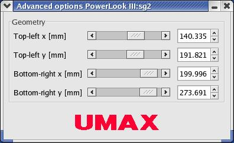

The advanced options window contains special scanner options
that should be used by advanced users. XSane does not now anything about
these options, it only creates this dialog to give the user the possibility
to take control of these options.
Please read the backend manual if you need any information about
the functions you find in this window.